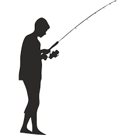
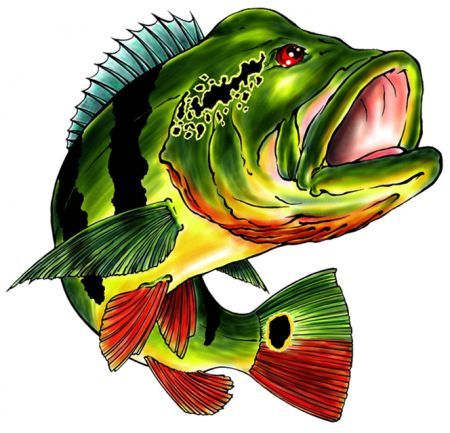

Que tal nos conhecermos melhor? Conte-nos sobre suas preferências e pescarias logo abaixo!
Modalidade
Qual sua modalidade favorita de pesca esportiva?

Espécie
Qual sua espécie favorita de Tucunaré?

Assiduidade
Quantas vezes você pesca por ano?
Troféu
Qual o maior Tucuna que você já pegou?
Agora responda algumas de conhecimento geral sobre o Tucunaré!
1° Qual é o nome científico do tucunaré-açu? a) Cichla temensis b) Cichla monoculus c) Cichla ocellaris d) Cichla pinima e) Cichla orinocensis
Digite a sua resposta!
2° Qual é o habitat natural do tucunaré? a) Rios e lagos da Amazônia b) Águas salgadas do oceano c) Represas e reservatórios d) Manguezais costeiros e) Águas geladas dos polos
Digite a sua resposta!
3° Qual é a espécie de tucunaré mais comum no Brasil? a) Tucunaré-azul b) Tucunaré-amarelo c) Tucunaré-paca d) Tucunaré-borboleta e) Tucunaré-açu
Digite a sua resposta!
4°Qual é a técnica esportiva de pesca mais utilizada para capturar tucunarés? a) Pesca de praia b) Pesca de bait fishing c) Pesca de arpão d) Pesca de linha de mão e) Pesca de fly fishing
Digite a sua resposta!
5° Qual é o período de reprodução do tucunaré? a) Primavera b) Verão c) Outono d) Inverno e) Não há um período específico
Digite a sua resposta!
6° Qual é o tamanho médio de um tucunaré adulto? a) 10-20 centímetros b) 20-30 centímetros c) 30-40 centímetros d) 40-50 centímetros e) 50-60 centímetros
Digite a sua resposta!
7° Qual é a isca artificial mais popular para atrair tucunarés? a) Minhoca b) Camarão c) Grilo d) Plug de superfície e) Massa de pão
Digite a sua resposta!
8° Qual é a importância de soltar os tucunarés capturados durante a pesca esportiva? a) Preservar o estoque de peixes para futuras gerações b) Promover a pesca esportiva evitando a caça predatória c) Manter o equilíbrio ecológico dos rios d) Promover a renovação da população de tucunarés e) Todas as alternativas estão corretas
Digite a sua resposta!
9° Qual é o recorde mundial em centímetros para um tucunaré capturado? a) 81cm b) 85cm c) 89cm d) 93cm e) 98cm
Digite a sua resposta!
10° 10. Qual é a melhor época do ano para pescar tucunarés? a) Inverno-Primavera b) Primavera-Verão c) Verão-Outono d) Outono-Inverno e) Não há uma época específica